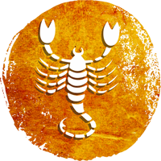

Scorpio Moon Sign

HEALTH :
Those who suffer from high blood pressure might face health-related problems. Keep a tab on your eating habits. Don’t take even small health problems lightly. Women natives should take special care of their health. The first few and the last two months can increase your health trouble. Many times you will feel physically exhausted and fatigued. To avoid such situations, fulfill the nutritional requirement of your body through food supplements. There are chances of an injury and accident in November and December.
FINANCIAL CONDITION:
At the beginning of the year, your financial condition will be strong. Working professionals might get a significant salary hike. There are chances of financial losses between April and July. You may also take a loan for some important work. Businesspeople will get rid of their problems. Your savings will come in handy in a tight spot. You may make big investments in gold and mutual funds. The middle part of the year will be most favourable from the financial perspective. Repayment of old debts will increase your reputation and goodwill.
FAMILY AND SOCIAL LIFE:
You fully understand your family-related responsibilities. Your family members will trust you. There are chances of a win in legal disputes. Property-related disputes will get over. Your family life will remain pleasurable. You may also go on a pilgrimage this year. Your mother’s health might be worrisome at the beginning of the year. Pay attention to the upbringing of your children. There might be some problems in your in-laws’ family in November and December. Except for this, there would be peace and prosperity in your family.
LOVE LIFE:
During the first three months, you might have ideological conflicts with your life partner. Your misconceptions and delusions might make you an irrationally willful person. But with Rahu’s transit, all the problems surrounding your marital relationship will get over. You will have healthy communication with your life partner. There are chances of disputes in the love relationship between May and July. Mean-spirited people might provoke you against your love partner. The second half of the year would be favourable.
EDUCATION AND CARRER :
The carelessness of students in their studies, especially at the beginning of the year, will cost them dearly. Your academic performance will improve after April. Those who are preparing for civil services will have favourable time post June. Students pursuing technical education may get offered a good job. People associated with the fashion, beauty and hotel industry might register an increase in their earnings. There are strong chances of a transfer to your preferred location. The workplace atmosphere would remain pleasant. Between April and June, you might feel bad about the behaviour of your coworkers. You will have cordial relationships with your business partners. The year-end will be most favourable for your career.